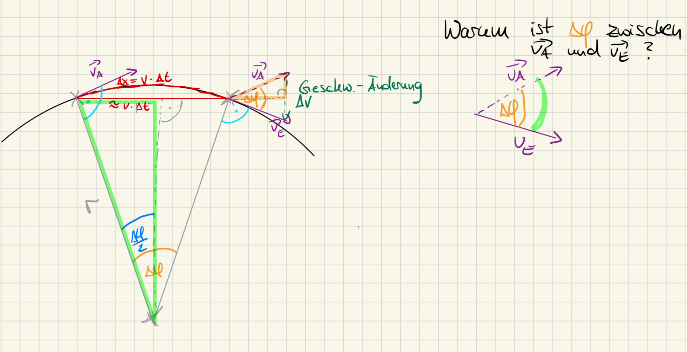
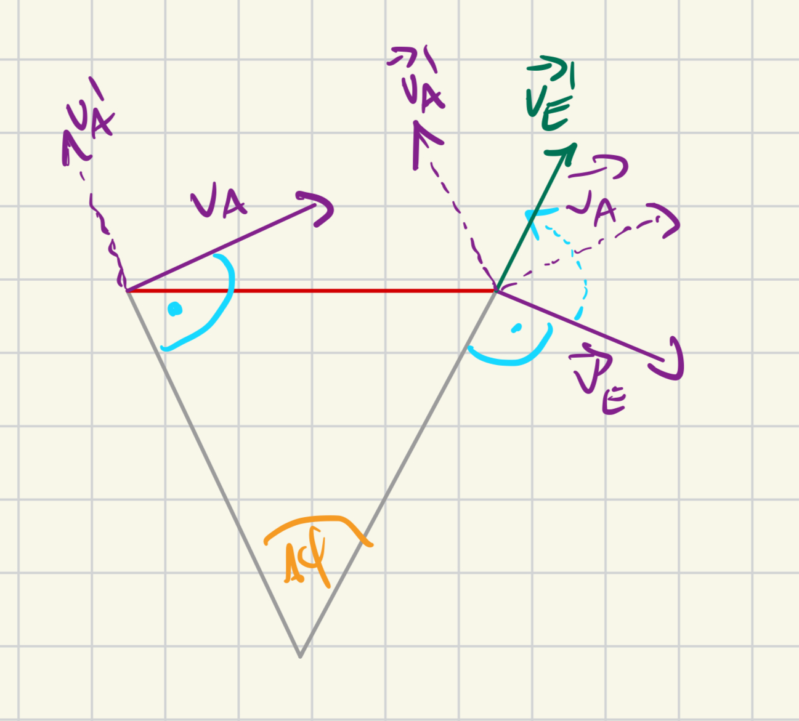
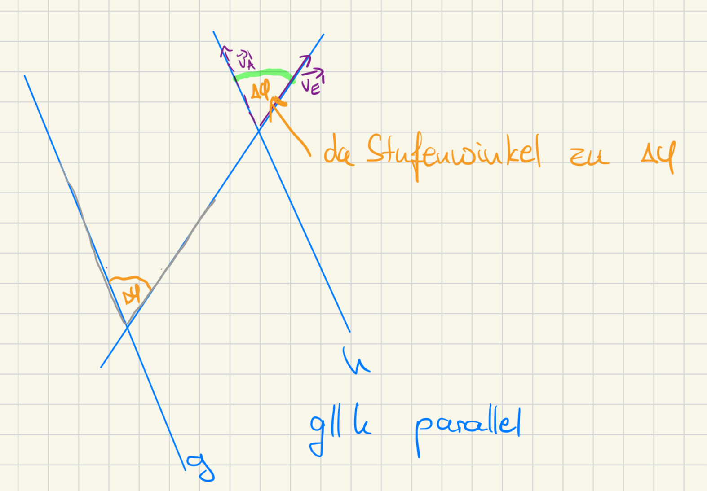

Worum geht es hier?
Bisher weißt du: Bei einer Kreisbewegung muss eine Kraft zum Mittelpunkt wirken – die Zentripetalkraft $F_Z$. Aber wie groß ist sie eigentlich? Auf dieser Seite leitest du die Formel $F_Z = m \cdot \frac{v^2}{r}$ selbst her – rein geometrisch, nur mit einer Kreisbewegung, zwei Geschwindigkeitsvektoren und ein bisschen Dreiecksgeometrie. Das Arbeitsblatt dazu („Zentripetalkraft – Herleitung – zum selbst Erarbeiten", Duden Physik 11, G9, Gymnasium Bayern, S. 15) bearbeitest du Schritt für Schritt: erst Aufgabe 1, dann Aufgabe 2, dann Aufgabe 3.
Die Ausgangssituation: Abb. 4
Ein Körper bewegt sich gleichförmig (mit konstantem Geschwindigkeitsbetrag $v$) in der Zeit $\Delta t$ von Punkt $A$ nach Punkt $B$ auf einer Kreisbahn mit Radius $r$ und Mittelpunkt $M$.
Teil A — Kreisbewegung von $A$ nach $B$
Teil B — Vektoraddition $\vec{v}_E = \vec{v}_A + \Delta \vec{v}$
Nach: Duden Physik 11 (G9), Gymnasium Bayern, S. 15 (eigene Nachzeichnung der Konstruktion)
Orientierung und Länge von $\vec{v}_A$ und $\vec{v}_E$
Erkläre die Orientierung der Geschwindigkeitsvektoren $\vec{v}_A$ und $\vec{v}_E$ in Teil A. Wieso ist die Länge der beiden gezeigten Vektoren gleich: $|\vec{v}_A| = |\vec{v}_E|$, also $v_A = v_E = v$?
Lösung anzeigen
$\vec{v}_A$ und $\vec{v}_E$ verlaufen tangential zur Kreisbahn, stehen also jeweils senkrecht auf dem Radius an ihrem Punkt ($\vec{v}_A \perp \overline{MA}$ bei $A$, $\vec{v}_E \perp \overline{MB}$ bei $B$).
Da die Bewegung gleichförmig ist, ändert sich nur die Richtung, nicht der Betrag der Geschwindigkeit. Deshalb sind beide Vektoren gleich lang: $|\vec{v}_A| = |\vec{v}_E| = v$.
Die zurückgelegte Strecke $\Delta x = v \cdot \Delta t$
Für die zurückgelegte Strecke zwischen $A$ und $B$ gilt nach der Zeichnung $\Delta x = v \cdot \Delta t$. Wieso? Und wie entsteht daraus das gleichschenklige Dreieck $\Delta MAB$?
Lösung anzeigen
Da der Geschwindigkeitsbetrag $v$ konstant ist (nur die Richtung ändert sich, siehe Aufgabe 1), gilt für die auf der Bahn zurückgelegte Strecke allgemein $v = \frac{\Delta x}{\Delta t}$, umgestellt also $\Delta x = v \cdot \Delta t$.
Für kleine Zeitspannen $\Delta t$ (und damit kleine Winkel $\Delta \varphi$) ist der Kreisbogen zwischen $A$ und $B$ näherungsweise so lang wie die gerade Verbindungsstrecke (Sehne) $\overline{AB}$. Zusammen mit den beiden Radien $\overline{MA}$ und $\overline{MB}$ (beide mit Länge $r$) entsteht so das gleichschenklige Dreieck $\Delta MAB$ mit Spitzenwinkel $\Delta \varphi$ bei $M$ — „gleichschenklig" bedeutet dabei einfach, dass zwei Seiten des Dreiecks gleich lang sind (hier die beiden Radien $\overline{MA} = \overline{MB} = r$, die „Schenkel").
Die Winkel sind gleich groß – und daraus folgt $F_Z$
Die beiden in Teil A und Teil B vorkommenden Winkel $\Delta \varphi$ sind gleich groß! Begründe das. Stelle dann mithilfe von $\sin\left(\frac{\Delta \varphi}{2}\right)$ die Seitenverhältnisse in beiden (gleichschenkligen) Dreiecken auf und setze sie gleich. Leite daraus eine Gleichung für die Zentripetalbeschleunigung $a_{ZP} = \frac{\Delta v}{\Delta t}$ und mithilfe von $F_Z = m \cdot a_{ZP}$ eine Gleichung für die Zentripetalkraft her. Was lässt sich über die Richtung von $F_Z$ sagen?
Bonus · optional
Erklärung zum Winkel $\Delta \varphi$
„Die beiden Winkel sind gleich groß" steht im Arbeitsblatt in einem einzigen Satz – das ist der schwierigste Sprung der
ganzen Herleitung. Für die Formel selbst reicht es, dieses Ergebnis einfach zu akzeptieren. Wer es genauer wissen will,
findet hier die drei Gedankenschritte dahinter, jeweils mit einer Handskizze dazu.
Erklärung zum Winkel $\Delta \varphi$
„Die beiden Winkel sind gleich groß" steht im Arbeitsblatt in einem einzigen Satz – das ist der schwierigste Sprung der ganzen Herleitung. Für die Formel selbst reicht es, dieses Ergebnis einfach zu akzeptieren. Wer es genauer wissen will, findet hier die drei Gedankenschritte dahinter, jeweils mit einer Handskizze dazu.

Die eigentliche Frage
Wir kennen zwei Winkel $\Delta \varphi$: den Winkel zwischen den beiden Radien $\overline{MA}$ und $\overline{MB}$ in Teil A (unten in der Skizze, am Kreismittelpunkt $M$), und den Winkel zwischen den Vektoren $\vec{v}_A$ und $\vec{v}_E$ im Vektordreieck von Teil B (oben in der Skizze). Für $\sin\left(\frac{\Delta\varphi}{2}\right)$ müssen wir in beiden Dreiecken denselben Winkel einsetzen – also: Sind das wirklich zwei gleich große Winkel, oder nur zufällig gleich benannt?

Beide Geschwindigkeiten sind „gedrehte Radien"
Aus Aufgabe 1 wissen wir: $\vec{v}_A \perp \overline{MA}$ und $\vec{v}_E \perp \overline{MB}$. Das heißt, $\vec{v}_A$ entsteht, indem man die Richtung von $\overline{MA}$ um $90^\circ$ dreht – und $\vec{v}_E$ entsteht genauso aus $\overline{MB}$, um denselben Winkel $90^\circ$ und im gleichen Drehsinn. Die Skizze zeigt beide Radiusrichtungen zusammen mit ihren um $90^\circ$ gedrehten Geschwindigkeitspfeilen (die kleinen rechten Winkel sind blau markiert).
Anschaulich: Wenn man zwei Zeigerarme (hier die Radien) um den gleichen Winkel im gleichen Sinn weiterdreht, bleibt der Winkel zwischen ihnen unverändert. Dasselbe muss also auch für die gedrehten Zeiger $\vec{v}_A$ und $\vec{v}_E$ gelten: Der Winkel zwischen ihnen ist genau wieder $\Delta \varphi$.

Der strenge Beweis: Stufenwinkel
Das lässt sich sauber mit Stufenwinkeln zeigen (das kennst du aus der Mittelstufen-Geometrie: an zwei parallelen Geraden, die von einer dritten Geraden geschnitten werden, sind Stufenwinkel gleich groß):
- Verlängere den Radius $\overline{MB}$ zu einer vollständigen Geraden $g$.
- Zeichne durch $A$ eine Gerade $h$, die parallel zu $g$ verläuft ($g \parallel h$) – das ist die „an $A$ verschobene" Richtung von $\overline{MB}$.
- Die Gerade $k$ (die Verlängerung von $\overline{MA}$) schneidet als Transversale beide Parallelen: unten bei $M$ (dort liegt der Winkel $\Delta \varphi$ zwischen $k$ und $g$) und oben bei $A$ (dort liegt der Stufenwinkel zu $\Delta \varphi$ zwischen $k$ und $h$ – im Bild orange markiert).
- Weil $g \parallel h$, sind diese beiden Winkel als Stufenwinkel gleich groß: Der Winkel bei $A$ zwischen $k$ (also $\overline{MA}$) und $h$ (also der zu $\overline{MB}$ parallelen Richtung) ist ebenfalls $\Delta \varphi$.
- Da $\vec{v}_A \perp k$ und $\vec{v}_E \perp h$ (weil $h \parallel \overline{MB}$), sind $\vec{v}_A$ und $\vec{v}_E$ wieder genau die um $90^\circ$ gedrehten Schenkel dieses Winkels – ihr Zwischenwinkel bleibt $\Delta \varphi$. $\blacksquare$
Kurzfassung für dein Arbeitsblatt: Der Winkel zwischen den Radien in Teil A und der Winkel zwischen den Geschwindigkeitsvektoren in Teil B sind Stufenwinkel an parallelen Hilfsgeraden – deshalb sind beide Dreiecke in Bezug auf $\Delta \varphi$ gleich, und du darfst ihre Seitenverhältnisse gleichsetzen.
Vollständige Lösung & Formel anzeigen
Weil beide Dreiecke (das gleichschenklige Dreieck $\Delta MAB$ in Teil A und das Vektordreieck in Teil B) den gleichen Spitzenwinkel $\Delta \varphi$ und jeweils zwei gleich lange Schenkel haben, sind entsprechende Seitenverhältnisse gleich. Halbiert man den Spitzenwinkel (die Höhe auf die Basis halbiert bei einem gleichschenkligen Dreieck immer auch den Spitzenwinkel und steht senkrecht auf der Basis), entstehen in beiden Dreiecken zwei rechtwinklige Teildreiecke mit Winkel $\frac{\Delta \varphi}{2}$ an der Spitze – deshalb darf man dort ganz normal mit $\sin\left(\frac{\Delta\varphi}{2}\right) = \frac{\text{Gegenkathete}}{\text{Hypotenuse}}$ rechnen:
Gleichsetzen liefert:
Mit der Definition der Beschleunigung $a = \frac{\Delta v}{\Delta t}$ ist das bereits die Zentripetalbeschleunigung, und mit $F_Z = m \cdot a_{ZP}$ sowie $v = \omega \cdot r$ folgt die Zentripetalkraft:
Richtung: $\vec{a}_{ZP}$ ist (laut Definition $a = \Delta v / \Delta t$) parallel zu $\Delta \vec{v}$. Verschiebt man den Vektor $\Delta \vec{v}$ aus Teil B parallel an den Punkt $P$ genau in der Mitte des Kreisbogens zwischen $A$ und $B$ (in Teil A), zeigt er radial zum Kreismittelpunkt $M$. Die Zentripetalbeschleunigung – und damit auch die Zentripetalkraft $\vec{F}_Z$ – ist also stets zum Mittelpunkt der Kreisbahn gerichtet.